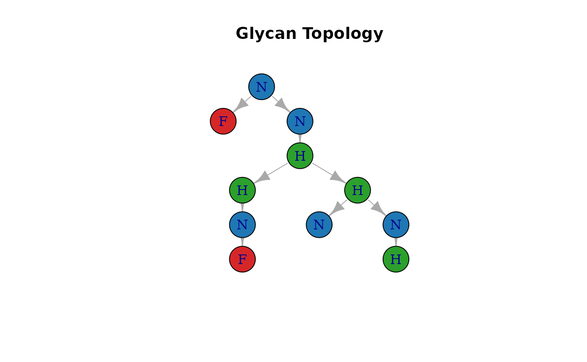
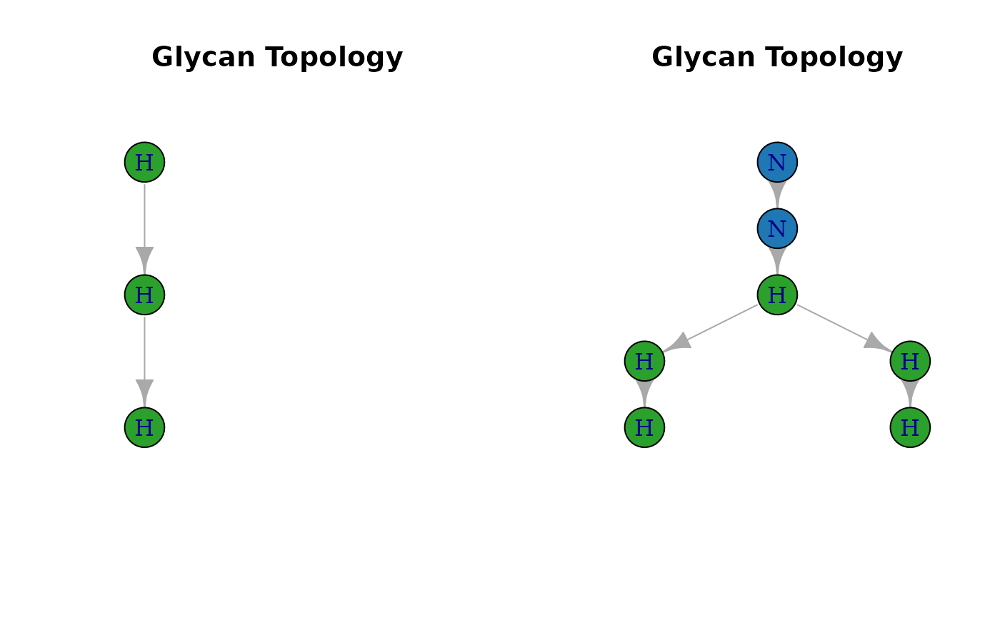

Abstract
glycoTraitR is designed for users who want to go beyond simple differential analysis, extracting, summarizing, and analyzing glycan structural traits from GPSM data generated by pGlyco3 or Glyco-Decipher.
Introduction
glycoTraitR is designed for users who want to go beyond simple differential analysis, extracting, summarizing, and analyzing glycan structural traits from GPSM data generated by pGlyco3 or Glyco-Decipher.
It provides a streamlined workflow for:
- parsing WURCS 2.0 and pGlyco3 glycan strings
- computing composition & structural traits
- summarizing glycan–PSM trait matrices at site/protein level
(
SummarizedExperiment) - performing differential trait analysis and visualizing trait changes
Installation
if (!require("BiocManager", quietly = TRUE))
install.packages("BiocManager")
BiocManager::install("matsui-lab/glycoTraitR")Quick Start
The example uses publicly available pGlyco3 GPSM data hosted on Zenodo.
1. Load example data
# The following is an example file from Zenodo
# url <- "https://zenodo.org/records/17756830/files/pGlycoDB-GP-FDR-Pro-Quant-Site.txt?download=1"
# download.file(url, "pGlyco3_GPSM.txt", mode = "wb")
# gpsm <- read_pGlyco3_gpsm("pGlyco3_GPSM.txt")
# meta_url <- "https://zenodo.org/records/17759790/files/meta_mcp_2022_100433.rds?download=1"
# download.file(meta_url, "meta_example.rds", mode = "wb")
# meta <- readRDS("meta_example.rds")
# The following is a smaller toy example files from package
path <- system.file("extdata", "pGlyco3_gpsm_toyexample.txt", package = "glycoTraitR")
gpsm_toyexample <- read_pGlyco3_gpsm(path)
data("meta_toyexample")2. Build glycan trait matrices
trait_se <- build_trait_se(
gpsm_toyexample,
from = "pGlyco3",
motifs = NULL,
level = "protein",
meta = meta_toyexample
)3. Differential analysis
changed_traits <- analyze_trait_changes(
trait_se = trait_se,
group_col = "Diagnosis",
group_levels = c("Normal", "Symptomatic"),
min_psm = 20
)
head(changed_traits)## trait level l_pval f_val t_pval t_val
## t GlycanSize CNTN1 0.03309985 4.570347 0.03318245 2.136934
## t1 GlycanSize ITB8 0.01750819 5.994530 0.08711770 -1.793639
## t2 GlycanSize MOG 0.07219982 3.291038 0.02897848 2.210923
## t3 Hexose ITB8 0.01964245 5.770116 0.09411908 -1.749760
## t4 Hexose MOG 0.09384406 2.853005 0.01962574 2.365832
## t5 HexNAc CNTN1 0.04575081 4.014279 0.02068097 2.3224564. Trait distribution visualization
p <- plot_trait_distribution(
trait_se = trait_se,
group_col = "Diagnosis",
group_levels = c("Normal", "Symptomatic"),
trait_name = "Hexose",
feature = "MOG"
)
p$p_hist
p$p_box
Define Your Own Glycan Motifs
Next we demonstrate how to define the glycan motifs of users’ own interests. Users can detect these motif occurrences within glycan structures using glycoTraitR.
We will: 1. Parse glycan structures into graph trees 2. Visualize full glycans & motifs 3. Perform subgraph isomorphism matching using igraph functions 4. Count occurrences of motif patterns
1. Parse and plot glycan trees
Suppose we have a vector of glycan structures.
# Example: parsed glycan trees from existing GPSM data
path <- system.file("extdata", "pGlyco3_gpsm_toyexample.txt", package = "glycoTraitR")
gpsm_toyexample <- read_pGlyco3_gpsm(path)
data("meta_toyexample")
glycans <- lapply(gpsm_toyexample$GlycanStructure, glycoTraitR:::pGlyco3_to_tree)We use the function build_glycan_igraph() to visualize
an exxample of glycan structure.
# visualize example structures
glycans[[1]] %>%
glycoTraitR::build_glycan_igraph() %>%
plot_glycan_tree()
2. A Simple User Motif (Example 1)
Here we define a linear trisaccharide motif:
- H — H — H
- Edges:
"a-b","b-c"
#### Example 1 ####
# (1) Select a glycan from pGlyco3 data
tree_full <- glycans[[24]]
g_full <- glycoTraitR::build_glycan_igraph(tree_full)
# (2) Define motif manually
motif <- list(
node = c("H", "H", "H"),
edge = c("a-b", "b-c")
)
g_motif <- glycoTraitR::build_glycan_igraph(motif)
# (3) Perform subgraph matching
n_match <- count_subgraph_isomorphisms(
g_motif, g_full,
method = "vf2",
vertex.color1 = factor(V(g_full)$type),
vertex.color2 = factor(V(g_motif)$type)
)
# (4) Visualize
par(mfrow = c(1, 2))
plot_glycan_tree(g_motif)
plot_glycan_tree(g_full)
## [1] "2 motif(s) found in the glycan"3. Motif Containing Fucose (Example 2)
This example defines a branched motif containing Fucose:
#### Example 2 ####
# (1) Select a glycan
tree_full <- glycans[[1]]
g_full <- glycoTraitR::build_glycan_igraph(tree_full)
# (2) Symbolic motif definition
motif <- list(
node = c("H", "N", "F"),
edge = c("a-b", "b-c")
)
g_motif <- glycoTraitR::build_glycan_igraph(motif)
# (3) Subgraph matching
n_match <- igraph::count_subgraph_isomorphisms(
g_motif, g_full,
method = "vf2",
vertex.color1 = factor(V(g_full)$type),
vertex.color2 = factor(V(g_motif)$type)
)
# (4) Visualize motif vs. full glycan
par(mfrow = c(1, 2))
plot_glycan_tree(g_motif)
plot_glycan_tree(g_full)
## [1] "1 motif(s) found in the glycan"4. Integrating Motifs with glycoTraitR (for Trait Computation)
You can define multiple motifs at once:
user_motifs <- list(
LinearH3 = list(
node = c("H", "H", "H"),
edge = c("a-b", "b-c")
),
FucBranch = list(
node = c("H", "N", "F"),
edge = c("a-b", "b-c")
)
)Then directly pass them into build_trait_se():
trait_se <- build_trait_se(
gpsm_toyexample,
from = "pGlyco3",
motifs = user_motifs,
level = "protein",
meta = meta_toyexample
)
SummarizedExperiment::assayNames(trait_se)## [1] "GlycanSize" "Hexose" "HexNAc" "Neu5Ac" "Neu5Gc"
## [6] "Fucose" "Antennas" "Bisect" "Complex" "HighMan"
## [11] "Hybrid" "CoreFuc" "AntFuc" "LinearH3" "FucBranch"Your motif counts will automatically appear as additional glycan traits in the trait matrices.
Conclusion
We have demonstrated how to:
- Parse glycans into trees
- Visualize glycan topology
- Define custom motif structures
- Apply subgraph isomorphism to detect motif occurrences
- Integrate motifs into the glycan trait workflow
You can now construct your own biologically meaningful glycan motifs and include them directly in glycoTraitR analyses.
## R version 4.4.0 (2024-04-24)
## Platform: x86_64-pc-linux-gnu
## Running under: Ubuntu 22.04.2 LTS
##
## Matrix products: default
## BLAS: /opt/R/4.4.0/lib/R/lib/libRblas.so
## LAPACK: /usr/lib/x86_64-linux-gnu/lapack/liblapack.so.3.10.0
##
## locale:
## [1] LC_CTYPE=en_US.UTF-8 LC_NUMERIC=C
## [3] LC_TIME=en_US.UTF-8 LC_COLLATE=en_US.UTF-8
## [5] LC_MONETARY=en_US.UTF-8 LC_MESSAGES=en_US.UTF-8
## [7] LC_PAPER=en_US.UTF-8 LC_NAME=C
## [9] LC_ADDRESS=C LC_TELEPHONE=C
## [11] LC_MEASUREMENT=en_US.UTF-8 LC_IDENTIFICATION=C
##
## time zone: Asia/Tokyo
## tzcode source: system (glibc)
##
## attached base packages:
## [1] stats graphics grDevices utils datasets methods base
##
## other attached packages:
## [1] igraph_2.0.3 dplyr_1.1.4 glycoTraitR_0.99.0
##
## loaded via a namespace (and not attached):
## [1] SummarizedExperiment_1.34.0 gtable_0.3.6
## [3] xfun_0.54 bslib_0.7.0
## [5] ggplot2_4.0.0 htmlwidgets_1.6.4
## [7] Biobase_2.64.0 lattice_0.22-6
## [9] vctrs_0.6.5 tools_4.4.0
## [11] generics_0.1.3 parallel_4.4.0
## [13] stats4_4.4.0 tibble_3.2.1
## [15] fansi_1.0.6 highr_0.10
## [17] pkgconfig_2.0.3 Matrix_1.7-0
## [19] RColorBrewer_1.1-3 S7_0.2.0
## [21] desc_1.4.3 S4Vectors_0.42.0
## [23] lifecycle_1.0.4 GenomeInfoDbData_1.2.12
## [25] stringr_1.5.1 compiler_4.4.0
## [27] farver_2.1.2 textshaping_1.0.3
## [29] carData_3.0-5 GenomeInfoDb_1.40.0
## [31] htmltools_0.5.8.1 sass_0.4.9
## [33] yaml_2.3.8 Formula_1.2-5
## [35] car_3.1-3 tidyr_1.3.1
## [37] pkgdown_2.0.9 pillar_1.9.0
## [39] crayon_1.5.2 jquerylib_0.1.4
## [41] DelayedArray_0.30.1 cachem_1.0.8
## [43] abind_1.4-5 tidyselect_1.2.1
## [45] digest_0.6.35 stringi_1.8.4
## [47] purrr_1.0.2 labeling_0.4.3
## [49] fastmap_1.2.0 grid_4.4.0
## [51] cli_3.6.2 SparseArray_1.4.8
## [53] magrittr_2.0.3 S4Arrays_1.4.1
## [55] dichromat_2.0-0.1 utf8_1.2.4
## [57] withr_3.0.0 scales_1.4.0
## [59] UCSC.utils_1.0.0 rmarkdown_2.26
## [61] XVector_0.44.0 httr_1.4.7
## [63] matrixStats_1.3.0 ragg_1.5.0
## [65] pbapply_1.7-2 memoise_2.0.1
## [67] evaluate_0.23 knitr_1.46
## [69] GenomicRanges_1.56.0 IRanges_2.38.0
## [71] rlang_1.1.3 glue_1.7.0
## [73] BiocGenerics_0.50.0 rstudioapi_0.16.0
## [75] jsonlite_1.8.8 R6_2.5.1
## [77] MatrixGenerics_1.16.0 systemfonts_1.3.1
## [79] fs_1.6.4 zlibbioc_1.50.0